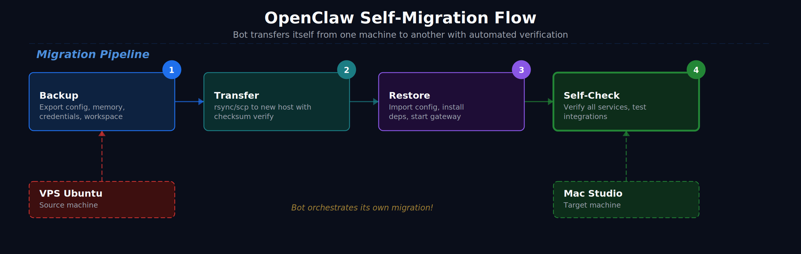

In this post · ในบทความนี้
ทำไมต้องย้าย?
มีหลายเหตุผลที่คุณอาจต้องย้าย OpenClaw bot ไปเครื่องใหม่ — VPS หมดสัญญา, อยากเปลี่ยนมาใช้เครื่องที่แรงกว่า, ย้ายจาก cloud มาเครื่องบ้าน, หรือแค่อยาก consolidate หลายบอทมาเครื่องเดียว
ปัญหาคือ OpenClaw bot ไม่ใช่แค่โปรแกรมเดียว — มันมี config, credentials, memory, workspace, skills, cron jobs, และ session data ที่ต้องย้ายมาด้วยกันหมด ถ้าย้ายไม่ครบ bot จะลืมทุกอย่าง หรือแย่กว่านั้น — ส่งข้อความไม่ได้

⚠️ ก่อนเริ่ม — อ่านนี้ก่อน
- ห้ามรัน bot ทั้งสองเครื่องพร้อมกัน (โดยเฉพาะ Telegram — session จะชนกัน)
- ย้ายเสร็จแล้วค่อย stop เครื่องเก่า ← ทำแบบนี้ผิด! ต้อง stop เครื่องเก่าก่อน แล้วค่อยเริ่มเครื่องใหม่
- ถ้าใช้ Telegram channel — session ผูกกับ device ดังนั้น ต้อง stop เครื่องเก่าก่อนเสมอ
สิ่งที่ต้องเตรียม
- เครื่องเก่า: VPS Ubuntu ที่รัน OpenClaw อยู่
- เครื่องใหม่: Mac Studio (macOS) — หรือเครื่องใหม่ใดๆ ที่มี Node.js 18+
- SSH access ถึงทั้งสองเครื่อง
- พื้นที่ว่างเพียงพอ บนเครื่องใหม่ (ดูจาก
du -sh ~/.openclaw)
เตรียมและ Backup จากเครื่องเก่า
หยุด Gateway บนเครื่องเก่า
สำคัญมาก — ต้องหยุดก่อนเพื่อไม่ให้เกิดการเขียน data ระหว่าง backup
# SSH เข้าเครื่องเก่า
ssh user@your-vps-ip
# หยุด gateway
openclaw gateway stop
# ยืนยันว่าหยุดแล้ว
openclaw gateway status
# ควรเห็น: Gateway is not runningตรวจสอบขนาดข้อมูล
# ดูขนาดทั้งหมด
du -sh ~/.openclaw
# ดูรายละเอียดแต่ละโฟลเดอร์
du -sh ~/.openclaw/*/
# ตัวอย่างผลลัพธ์:
# 12M ~/.openclaw/workspace/
# 4.0K ~/.openclaw/credentials/
# 256K ~/.openclaw/agents/
# 2.1M ~/.openclaw/telegram/
# 80K ~/.openclaw/cron/สร้าง Backup ด้วย openclaw backup
OpenClaw มีคำสั่ง backup ในตัว — ใช้มันแทนที่จะ tar เอง เพราะมันรู้ว่าอะไรต้อง include อะไรข้าม
# สร้าง backup พร้อม verify
openclaw backup create --verify --output ~/
# จะได้ไฟล์ประมาณ:
# ~/2026-03-24T00-00-00.000Z-openclaw-backup.tar.gz
# ดูขนาด backup
ls -lh ~/2026-03-24*.tar.gz💡 backup ครอบคลุมอะไรบ้าง?
- openclaw.json — config หลัก (model, channels, settings ทั้งหมด)
- credentials/ — API keys, tokens ทุกตัว
- agents/ — agent configs, auth profiles
- workspace/ — SOUL.md, MEMORY.md, memory/, skills, tools ทั้งหมด
- telegram/ — session data (สำคัญ! ไม่งั้นต้อง login ใหม่)
- cron/ — scheduled tasks ทั้งหมด
(ทางเลือก) Manual backup เพิ่มเติม
ถ้าคุณมีไฟล์พิเศษนอก ~/.openclaw เช่น crontab, systemd service, หรือ git credentials:
# Export crontab
crontab -l > ~/crontab-backup.txt
# Copy git credentials ถ้ามี
cp ~/.git-credentials ~/git-credentials-backup 2>/dev/null
# Copy .env files ถ้ามี
cp ~/.openclaw/.env ~/env-backup 2>/dev/null
# บันทึก OpenClaw version
openclaw --version > ~/openclaw-version.txt
npm list -g openclaw >> ~/openclaw-version.txtส่งข้อมูลไปเครื่องใหม่
โอนไฟล์ด้วย scp หรือ rsync
เลือกวิธีที่สะดวก — ทั้งสองวิธีใช้ได้:
# วิธี A: scp (ง่ายสุด) — รันจากเครื่องใหม่ (Mac Studio)
scp user@your-vps-ip:~/2026-03-24*.tar.gz ~/Downloads/
# วิธี B: rsync (เร็วกว่าถ้าไฟล์ใหญ่ หรืออยากมี progress)
rsync -avz --progress user@your-vps-ip:~/2026-03-24*.tar.gz ~/Downloads/
# วิธี C: ถ้าทั้งสองเครื่องอยู่ใน Tailscale
scp user@vps-tailscale-name:~/2026-03-24*.tar.gz ~/Downloads/โอนไฟล์เพิ่มเติมด้วย (ถ้ามี):
scp user@your-vps-ip:~/crontab-backup.txt ~/Downloads/
scp user@your-vps-ip:~/git-credentials-backup ~/Downloads/
scp user@your-vps-ip:~/openclaw-version.txt ~/Downloads/ติดตั้งและ Restore บนเครื่องใหม่
ติดตั้ง OpenClaw บนเครื่องใหม่
# ติดตั้ง Node.js ถ้ายังไม่มี (macOS)
brew install node
# ติดตั้ง OpenClaw (ใช้ version เดียวกับเครื่องเก่า)
npm install -g openclaw
# ตรวจ version
openclaw --version⚠️ Version ต้องตรงกัน
ดู version จาก openclaw-version.txt ที่ backup มา ถ้า version เก่าใช้ npm install -g openclaw@x.x.x — version ไม่ตรงอาจทำให้ config format ไม่เข้ากัน
Restore จาก Backup
# ตรวจ backup ก่อน restore
openclaw backup verify ~/Downloads/2026-03-24*.tar.gz
# Restore — แตกไฟล์ไปที่ ~/.openclaw
# ถ้า ~/.openclaw ยังไม่มี (fresh install):
mkdir -p ~/.openclaw
tar -xzf ~/Downloads/2026-03-24*.tar.gz -C ~
# ตรวจว่าไฟล์ครบ
ls -la ~/.openclaw/
ls -la ~/.openclaw/workspace/
ls -la ~/.openclaw/credentials/💡 macOS path differences
OpenClaw ใช้ ~/.openclaw เหมือนกันทั้ง Linux และ macOS ดังนั้น path ไม่มีปัญหา แต่ถ้าใน config มี hardcoded absolute path (เช่น /root/...) ต้องแก้เป็น /Users/yourname/...
แก้ Config ให้เข้ากับเครื่องใหม่
เปิด config แล้วตรวจสอบ path ที่อาจต้องแก้:
# เปิด config
nano ~/.openclaw/openclaw.json
# สิ่งที่ต้องเช็ค/แก้:
# 1. workspace path — ถ้า hardcoded เป็น /root/... แก้เป็น /Users/yourname/...
# 2. hostname/IP — ถ้า gateway bind อยู่กับ IP เก่า
# 3. gateway port — ถ้าเครื่องใหม่ใช้ port นั้นอยู่แล้ว
# 4. tools path — เช่น path ไป python, docker, etc.Restore ไฟล์เสริม
# Git credentials (ถ้ามี)
cp ~/Downloads/git-credentials-backup ~/.git-credentials
# Crontab — ต้องแก้ path ก่อน import
# เปิดดูก่อน:
cat ~/Downloads/crontab-backup.txt
# แก้ path แล้ว import:
crontab ~/Downloads/crontab-backup.txtเริ่ม Gateway บนเครื่องใหม่
# เริ่ม gateway
openclaw gateway start
# ตรวจ status
openclaw gateway status
# ดู logs ว่ามี error ไหม
openclaw logs --tail 50🔍 Self-Check — ให้ Bot ตรวจตัวเอง
นี่คือส่วนสำคัญที่สุด — หลังจากย้ายเสร็จ ให้รันสคริปต์ตรวจสอบว่าทุกอย่างครบ ใช้ได้ทั้งรันเองและให้ bot รัน
สคริปต์ Self-Check อัตโนมัติ
สร้างไฟล์ migration-check.sh:
#!/bin/bash
# ============================================
# OpenClaw Migration Self-Check
# ย้าย bot มาแล้ว ต้องเช็คว่าครบ
# ============================================
PASS=0
FAIL=0
WARN=0
OPENCLAW_DIR="$HOME/.openclaw"
check() {
local label="$1"
local result="$2"
if [ "$result" = "pass" ]; then
echo " ✅ $label"
((PASS++))
elif [ "$result" = "warn" ]; then
echo " ⚠️ $label"
((WARN++))
else
echo " ❌ $label"
((FAIL++))
fi
}
echo ""
echo "🔍 OpenClaw Migration Self-Check"
echo "================================="
echo ""
# --- 1. Core Files ---
echo "📁 Core Files"
[ -f "$OPENCLAW_DIR/openclaw.json" ] && R="pass" || R="fail"
check "openclaw.json exists" "$R"
[ -d "$OPENCLAW_DIR/credentials" ] && R="pass" || R="fail"
check "credentials/ directory exists" "$R"
[ -d "$OPENCLAW_DIR/agents" ] && R="pass" || R="fail"
check "agents/ directory exists" "$R"
echo ""
# --- 2. Workspace ---
echo "📂 Workspace"
[ -d "$OPENCLAW_DIR/workspace" ] && R="pass" || R="fail"
check "workspace/ exists" "$R"
[ -f "$OPENCLAW_DIR/workspace/SOUL.md" ] && R="pass" || R="fail"
check "SOUL.md exists (bot personality)" "$R"
[ -f "$OPENCLAW_DIR/workspace/MEMORY.md" ] && R="pass" || R="warn"
check "MEMORY.md exists (long-term memory)" "$R"
[ -f "$OPENCLAW_DIR/workspace/USER.md" ] && R="pass" || R="warn"
check "USER.md exists (user profile)" "$R"
[ -d "$OPENCLAW_DIR/workspace/memory" ] && R="pass" || R="warn"
check "memory/ directory exists (daily logs)" "$R"
MEM_COUNT=$(ls "$OPENCLAW_DIR/workspace/memory/"*.md 2>/dev/null | wc -l)
[ "$MEM_COUNT" -gt 0 ] && R="pass" || R="warn"
check "memory files present ($MEM_COUNT files)" "$R"
echo ""
# --- 3. Skills ---
echo "🧩 Skills"
SKILL_COUNT=$(find "$OPENCLAW_DIR/workspace/skills" -name "SKILL.md" 2>/dev/null | wc -l)
[ "$SKILL_COUNT" -gt 0 ] && R="pass" || R="warn"
check "skills installed ($SKILL_COUNT skills)" "$R"
echo ""
# --- 4. Channel/Session Data ---
echo "📡 Channels & Sessions"
[ -d "$OPENCLAW_DIR/telegram" ] && R="pass" || R="warn"
check "telegram/ session data exists" "$R"
echo ""
# --- 5. Cron Jobs ---
echo "⏰ Cron Jobs"
CRON_COUNT=$(ls "$OPENCLAW_DIR/cron/"*.json 2>/dev/null | wc -l)
[ "$CRON_COUNT" -gt 0 ] && R="pass" || R="warn"
check "cron jobs present ($CRON_COUNT jobs)" "$R"
echo ""
# --- 6. Gateway ---
echo "🌐 Gateway"
if openclaw gateway status 2>/dev/null | grep -qi "running"; then
check "gateway is running" "pass"
else
check "gateway is running" "fail"
fi
echo ""
# --- 7. Connectivity ---
echo "🔗 Connectivity"
if openclaw status 2>/dev/null | grep -qi "ok\|connected\|online"; then
check "openclaw status OK" "pass"
else
check "openclaw status check" "warn"
fi
echo ""
# --- 8. Bot Response Test ---
echo "🤖 Bot Response"
echo " ℹ️ Send a test message to your bot on Telegram/Discord"
echo " ℹ️ Verify it responds within 30 seconds"
echo ""
echo "================================="
echo "Results: ✅ $PASS passed | ❌ $FAIL failed | ⚠️ $WARN warnings"
echo ""
if [ "$FAIL" -eq 0 ]; then
echo "🎉 Migration looks good!"
if [ "$WARN" -gt 0 ]; then
echo " (Check warnings above — they may be optional)"
fi
else
echo "🚨 $FAIL check(s) failed — review above and fix before going live"
fi
echo ""รันสคริปต์:
chmod +x migration-check.sh
./migration-check.shผลลัพธ์ที่ควรเห็น
🔍 OpenClaw Migration Self-Check
=================================
📁 Core Files
✅ openclaw.json exists
✅ credentials/ directory exists
✅ agents/ directory exists
📂 Workspace
✅ workspace/ exists
✅ SOUL.md exists (bot personality)
✅ MEMORY.md exists (long-term memory)
✅ USER.md exists (user profile)
✅ memory/ directory exists (daily logs)
✅ memory files present (15 files)
🧩 Skills
✅ skills installed (12 skills)
📡 Channels & Sessions
✅ telegram/ session data exists
⏰ Cron Jobs
✅ cron jobs present (3 jobs)
🌐 Gateway
✅ gateway is running
🔗 Connectivity
✅ openclaw status OK
🤖 Bot Response
ℹ️ Send a test message to your bot on Telegram/Discord
ℹ️ Verify it responds within 30 seconds
=================================
Results: ✅ 12 passed | ❌ 0 failed | ⚠️ 0 warnings
🎉 Migration looks good!ให้ Bot ตรวจตัวเองผ่านแชท
หลังจาก gateway เริ่มแล้ว ส่งข้อความหาบอทผ่าน Telegram แล้วถามให้มันตรวจ:
💬 ข้อความที่ส่งให้ bot
"เพิ่งย้ายเครื่อง ช่วยตรวจสอบหน่อยว่า:"
- อ่าน SOUL.md, MEMORY.md ได้ไหม?
- memory files มีกี่ไฟล์?
- skills ติดตั้งอยู่กี่ตัว?
- cron jobs มีอะไรบ้าง?
- รัน
openclaw statusแล้วแปะผลมาให้ - จำอะไรเกี่ยวกับฉันได้บ้าง?
ถ้า bot ตอบได้ทุกข้อ — แสดงว่า memory, config, credentials, และ channel ย้ายมาครบแล้ว ถ้ามันจำคุณไม่ได้หรืออ่านไฟล์ไม่ได้ แสดงว่า workspace path ยังไม่ถูกต้อง
Cleanup เครื่องเก่า
หลังจากมั่นใจว่าเครื่องใหม่ทำงานปกติแล้ว (ใช้งานจริง 1-2 วัน):
# SSH เข้าเครื่องเก่า
ssh user@your-vps-ip
# ยืนยันว่า gateway หยุดแล้ว
openclaw gateway status
# ถ้ายังรันอยู่:
openclaw gateway stop
# (ทางเลือก) ลบ OpenClaw ออกจากเครื่องเก่า
# ⚠️ ทำเมื่อมั่นใจจริงๆ เท่านั้น!
# npm uninstall -g openclaw
# rm -rf ~/.openclaw🚨 อย่าลบเครื่องเก่าทันที!
ใช้เครื่องใหม่จริง 2-3 วันก่อน ถ้ามีปัญหาจะได้กลับไป restore จากเครื่องเก่าได้ เก็บ backup file ไว้อย่างน้อย 1 สัปดาห์
Troubleshooting
❌ Bot ไม่ตอบใน Telegram
- เช็คว่า gateway รันอยู่:
openclaw gateway status - ดู logs:
openclaw logs --tail 100 - Telegram session อาจหมดอายุ — ต้อง login ใหม่:
openclaw channels login telegram
❌ Bot ลืมทุกอย่าง
- ตรวจ workspace path ใน config:
cat ~/.openclaw/openclaw.json | grep workspace - ตรวจว่า MEMORY.md อยู่ถูกที่:
ls ~/.openclaw/workspace/MEMORY.md
❌ Skills ใช้ไม่ได้
- Skills ที่มี binary dependency (เช่น python, docker) ต้องติดตั้ง dependency บนเครื่องใหม่ด้วย
- macOS อาจต้อง
brew install python3 docker
❌ Cron jobs ไม่ทำงาน
- ตรวจ:
openclaw cron list - ถ้า cron ใช้ system crontab (ไม่ใช่ OpenClaw cron) ต้อง import crontab แยก
- แก้ path ใน crontab ให้ตรงกับเครื่องใหม่
📌 สรุปขั้นตอนทั้งหมด
- หยุด gateway บนเครื่องเก่า
- Backup ด้วย
openclaw backup create --verify - Transfer ไฟล์ด้วย scp/rsync ไปเครื่องใหม่
- ติดตั้ง OpenClaw บนเครื่องใหม่ (version เดียวกัน)
- Restore จาก backup archive
- แก้ path ที่ hardcoded ใน config (เช่น /root → /Users/name)
- เริ่ม gateway บนเครื่องใหม่
- รัน self-check script ยืนยันทุกอย่างครบ
- ส่งข้อความทดสอบ ให้ bot ตรวจตัวเอง
- ใช้จริง 2-3 วัน ก่อนลบเครื่องเก่า
🎉 เสร็จแล้ว!
Bot ของคุณย้ายบ้านเรียบร้อย — personality เดิม, ความจำเดิม, skills เดิม, ทุกอย่างเหมือนเดิม แค่เปลี่ยนเครื่อง เหมือนย้ายสมองจากร่างเก่าไปร่างใหม่ 🧠➡️💻
"A good migration is one where nobody notices anything changed — except the server bill."